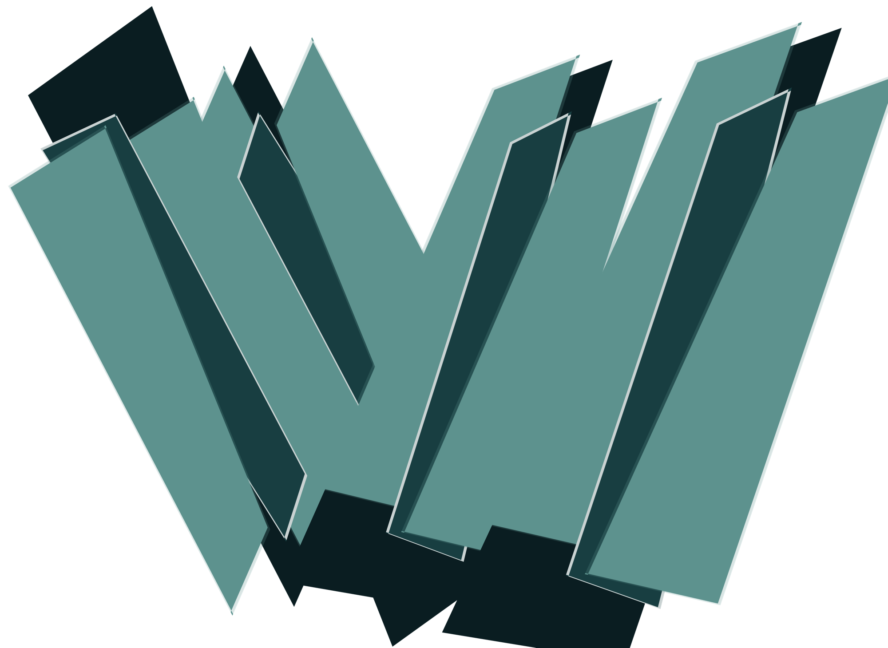
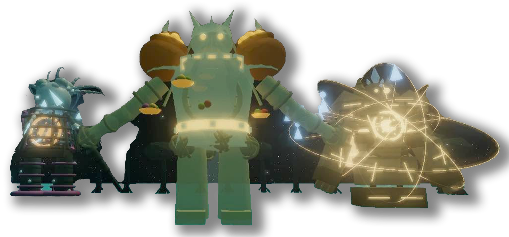
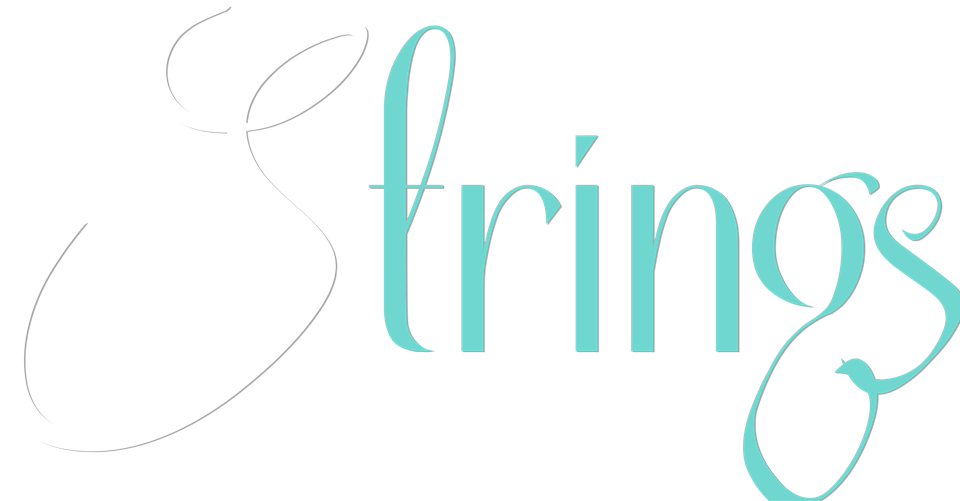

LOADING…
Stamina
Alab
R
Health
Drowned Echoes
Wave
1
/
4
0
remain
The Reveler
Riddle 1 in 0:20
Tower Ascent
Tide dormant
Air gap
1.2
m
Altitude
0.0
m
Tide dormant · 8.0s
Memory seals
0 / 3
Submerged
The tide rewinds. Begin the ascent again.
Zephyr
0.0s
Overcharge
0.0s
Hold
E
to reach toward it
Challenge in progress
Shoot the correct answer to break the Feastkeeper's armor.
Guardian of the Memory Rift


A Cultural Preservation Experience
Strings — Follow the Path. Restore the Forgotten

Start
›
Settings
Connect GameOn Account
Skip to Museum
Test Final Cutscene
Guardian Debug Zone
Dagupan
Pangasinan
Memory Archive
01
Settings
Music
90%
SFX
90%
Look speed
1.00×
Brightness
100%
This Run
Restart this memory
Quit to title
Progress is kept for this session only.
GameOn Portal
Connect GameOn Account
Done
⚙
STRINGS
"Beneath the water, the city still breathes."
Zone 1 — PONSIA
Click to Descend
WASD — Wade · SHIFT — Sprint · MOUSE — Look · HOLD CLICK — Cast Light · F — Shockwave · E — Reach · ESC — Release
Open your eyes
〈
Awaken
〉
STRINGS
A cultural preservation experience for Pangasinan.
Created for AI Game On! — Giving Our History a New Heartbeat.
Return to Aking Museo
Origin
✦
Lore
✦ Saved to your Digital Museum — Aking Museo
Click anywhere to return to the water
ZONE 1 COMPLETE
"Hindi natin malilimutan ang isang bagay na ating minahal."
(We cannot forget something we have loved.)
Return to your Museum
Paused
Aking Museo
"The gallery waits in the quiet."
Ledger
Memories
Lore
Objectives
The Ledger
Memories restored
0 / 27
Guardian Souls
0 / 3
Zones restored
0 / 3
Controls
‹ Back to the collection
Origin
Lore